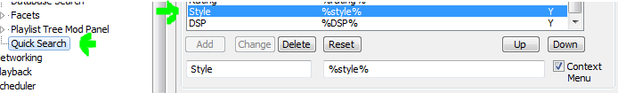

Playlist:
Playlist items:
Rating:
Custom contextual menus:
Playback order
Stop after current
Stop after queue
Playlist:
SMP Menus:
Playlist Tools Menu entries
Output device
DSP List
When Playlist Tools (Spider Monkey Panel script) is installed on foobar server, menu entries, output devices and DSP list will be available. They are read only (greyed), unless the associated menus are also enabled at 'Script integration\SMP Main menu' or foo_runcmd and foo_run_main plugins are both installed.
When the latter happens, devices and DSPs may be changed by using the drop-down list (uses command line).
Otherwise, when Script integration is set right, you can change the Output Device or the current DSP on server by selecting the desired entry on the drop-down list and calling the associated menu button. Only one device/dsp can be set at the same time (the playlist used to send the command will be cleared every time you set a different selection) List is also cleared after command execution.
Playlist Tools menu entries work the same, but they allow multiple commands execution. Everytime a menu entry is selected, the command is added to the server list. Clicking on the associated menu button executes the entire list and clears it. By its nature, these commands can not be send using command line.
SMP buttons always work, whether you have Playlist Tools installed or not. But without Playlist Tools they miss a lot of functionality:
Playlist manager panels: 0 (none found)
Available playlists:
Load playlist file:
Lock / unlock playlist:
Delete playlist file:
Clone in UI (copy):
Send selection to:
New empty playlist file:
Playlist file from active playlist:
Manually refresh panel:
When Playlist Manager (Spider Monkey Panel script) is installed on foobar, server playlists will be available in every action list. They are read only (greyed), unless foo_runcmd and foo_run_main plugins are both installed.
When the latter happens, playlist actions may be run by using the drop-down lists (using command line). Available playlists can be found at the top drop-down list with the following info:
Note every panel has its own set of associated playlists, so every panel must have a different panel name to work.
It's recommended to enable auto-saving on the server-side panels, otherwise changes to playlists will not be synced with their bound files. If that behavior is desired, playlist files may be selectively locked or cloned in UI (instead of loaded) to ensure no changes are made to the files -without disabling the global auto-saving feature-.
No console.
This window has general tools for playlist/track management, among them you will find:
(*) When Playlist Tools (Spider Monkey Panel script) is installed, component checking is also allowed, therefore Contextual menu Buttons are enabled/disabled according to the components installed.
(**) The default contextual buttons make use of title, artist and genre queries. Style is not a query provided by default when you install the component but it can be added with this data: (name: Style, query: %style%, context menu: checked).

When Playlist Tools (Spider Monkey Panel script) is installed on foobar server, menu entries, output devices and DSP list will be available (*):
When using Playlist Tools method, and 'Script integration\SMP Main menu' relevant config is set, then you can change the Output Device or the current DSP on server by selecting the desired entry on the drop-down list and calling the associated menu button. (****) Only one device/dsp can be set at the same time (the playlist used to send the command will be cleared every time you set a different selection) List is also cleared after command execution.
Playlist Tools menu entries work the same, but they allow multiple commands execution. Everytime a menu entry is selected, the command is added to the server list. (****) Clicking on the associated menu button executes the entire list and clears it.
(*) The panel is the one sending those lists to the server. Whether you enable or not the rest of the features, so it's a 'requirement' to see the actual devices or DSPs on the controller on real time. There is a 'workaround' if you don't use SMP and/or Playlist Tools though: you can manually edit 'smp\dsp.json' and 'devices.json' according to your PC config. Examples can be found at 'smp\defaults' folder.
(**) CMD method just uses simple command line to send the commands. Since it's cleaner (no playlist involved), it's preferred whenever it's possible. Obviously, it doesn't work for anything outside standard foobar main menus... so its usage is limited to those cases.
SMP buttons always work, whether you have Playlist Tools installed or not. But without the
panel they miss a lot of functionality:
An AJAX error occured.
Possible reasons:
Restart template or think of something else.